本科毕业设计：
由于本人的表述和组织的水平较差，有很多写得不好的地方，这些能力以后加强锻炼。最后的一段实现也很懈怠，只想着早一些完成。
因为我想写的是总的架构设计，但由于篇幅的原因，所以很多算法，设计理念都没有写清楚。还有一些是自己的见解，因为老师不是研究这个方向的，所以没有提一些意见，不保证正确性。如果说的有哪些不正确的地方敬请指正。
摘要
随着电商、社交、短视频等互联网产业的飞速发展，数据量爆发式增长，数据的存储需求和其上的业务操作需求越来越难以满足。传统的关系型数据库无法弹性扩缩容以应对数据的爆发式增长，而NoSQL解决了数据存储的可扩展性却不能保证事务的ACID特性。因此融合了RDBMS和NoSQL优点的NewSQL数据库（TiDB）应运而生。TiDB是分布式数据库开源实现的一个优秀项目，完全兼容MySQL协议，并且具有弹性的可扩展性、数据副本的强一致性和系统的高可用性，在业界有很高的认同度。
本文主要介绍了TiDB的架构及实现原理，首先描述分布式数据库设计的关键技术，包括数据分区、数据一致性和事务的原子性等。随后介绍TiDB中的SQL Server端的设计实现，TiDB中数据存储模型和TiKV中事务模型等要点。最后详细阐述了分布式关系型数据库的部署与应用。论文的主要研究内容包括：
- TiDB存储机制分析，在分析数据分区规则（索引分区和范围分区）的优缺点之后，分析TiDB的存储机制以及对查询的影响。
- TiDB 执行SQL语句的基本流程：SQL语句解析、合法性验证、制定查询计划、优化查询计划、生成执行器以及执行。
- TiDB 中的事务模型：通过TiKV中Column Families表管理事务，实现事务的原子性。
关键词：NewSQL，raft，2pc，一致性，可扩展性
第一章 绪论
研究背景
随着互联网产业的爆发式增长，互联网+和人工智能已经渗透到生活的各个方面。电商、微信、微博、美团、今日头条、抖音和滴滴打车等等产品深深地改变了我们的日常生活，并且带来巨大的经济效益。而这些国民级的应用时刻面临是海量数据的存储与访问，如何设计一个数据库系统能够有效地对应应用业务上的需求成为一个至关重要的问题。
传统的大型机的集中式，向上扩展（Scale-Up）不仅带来高额的成本却也不能完全解决问题。系统架构慢慢往分布式，横向扩展（Scale-Out）发展，它通过添加更多的通用服务器支持高并发访问。Google的Google File System[1]，Bigtable[2] 和MapReduce[3] 也奠定的分布式系统的原型。
随着应用架构的转变，数据处理的技术也跟着发展。互联网网站产生了大量的非结构化数据（如：网页数据，用户动态等数据），这些数据并不需要关系型数据库的join和事务保证，而由于数据量对系统的可扩展性等特性要求更高，关系型数据库已经不能满足这些需求了。NoSQL[4]为了解决传统关系型数据在高并发读写，高可扩展性和高可用性上等不足而逐渐发展起来非关系型数据库。主要有两个流行的NoSQL以文档存储的MongoDB[5]和以列式存储数据库的HBase[6]。
NoSQL虽然很好的解决了数据的高可扩展性和高可用性，但是在数据一致性上没有很好的实现，不能满足事务的特性。而且随着互联网的发展，关系型数据的数据量也暴增，同时事务的ACID特性也是很多业务需求的。我们需要这样的一种新型数据库：
- 可扩展性：只需通过添加资源，系统就能够简单地透明地进行扩展。
- 可用性（availability）：系统绝不能因任何原因停机。如：数据中心停机，维护计划，模式更改等。
- 一致性：系统必须提供ACID事务，并且必须始终呈现具有一致和正确数据的应用程序。
- 易用性（usability）：系统必须提供完整的SQL查询支持和用户对SQL数据库的其他功能。
研究现状
经过上个世纪的发展，单机关系型数据库已经有了成熟的产品，比如商业版的Oracle，开源版的MySQL。但是随着互联网的快速发展，用户数的剧增和二进制数据爆发式增长，单机性数据库在性能和成本上都很难满足各大公司的商业需求。一个折中的方案有像使用MySQL的主从复制模型分库分表，使用中间件管理表的安放策略[7]，从而到达伪的分布式数据库。这种方案将数据的可扩展性和可用性交给数据库管理人员去维护，而且在实现上还存在还有种种问题。而互联网相关网页的数据的爆发增长，使开发者意识到不是所有数据都需要采用关系型数据模型，而采用Key-Value的存储模型在数据的可扩展性和可用性都有很好的提升。继而以开发相关的NoSQL数据库为主，NoSQL为数据存储提供了一个很好的解决方案。
而随着业务的发展，互联网公司发现NoSQL并不能满足公司业务的一些需求，跨行的事务原子性的保证在很多场景下都是需要的，比如Google的AdWords系统在具有弹性扩展的同时还需要分布式事务的能力。Google利用底层的BigTable的单行更新的原子性和分布式存储的能力，设计了Spanner系统。它具有可扩展、提供快照服务和同步复制等等特点的新型数据库，并且对外提供分布式SQL查询接口和分布式事务的能力，成为业界第一个融合了关系型数据和NoSQL的优点的数据库。
而Spanner/F1[8]的分布式数据库特点也是其他公司需要的，PingCAP看到其中巨大的市场从而做了其开源实现的版本TiDB。PingCAP根据Spanner/F1系统的设计理念，采用分层系统的模型，将分布式数据库分为顶层的SQL层，底层的带分布式事务的存储引擎层和元数据管理层，不同层直接相互独立且低耦合。单一节点的模块故障不会给系统的可用性带来致命的影响，从而使得系统就有高鲁棒性。
本文研究内容
本文主要涉及分布式系统设计中下面这些问题：
- 数据的存储方式：数据存储模型（关系模型、kv模型等等）的优缺点，采用kv模型的数据采用什么数据划分策略，已经为了保证数据的高效访问key值得选取和相应的元数据服务器的设计方案。
- 数据冗余存储：数据多副本存储的一致性保证分为强一致性和弱一致性，之前由于技术的限制系统较多采用弱一致性，而由于Raft[9]一致性算法的出现在保证数据强一致性的同时也有很好的性能。
- 分布式事务的原子性：本质上事务的原子性也是数据一致性的一种情况，由于事务原子性要求所有节点达到一致的决定，所以在算法选择上不适合Raft算法，而采用两阶段提交的方式。
在分析分布式系统设计后，研究TiDB项目对应的设计方案。另外TiDB是本质上还是一个数据库，这就需要分析其在解析SQL语句，构建查询计划，优化方式等等技术要点。
本文组织
本文分为四章。其中第一章简述分布式数据库的研究背景和意义，及其分布式数据库的现状。第二章详细描述分布式数据库设计的关键技术，包括数据分区、数据一致性、事务的原子性等。第三章首先介绍TiDB整体架构，再分析其Key-Value存储引擎，随后讲解SQL处理流程，最后研究分布式事务的实现方式。第四章介绍TiDB的部署与应用详情，详细讲解一个分布式关系型数据库的设计与实现。
第二章 分布式系统概述
随着数据量和计算量越来越大，单机系统已经不能满足现在的需求了。通过将存储和计算任务分解到计算机集群中，成为应对存储和计算规模增大的良策。而分解计算和存储任务的方法主要有：数据划分和数据复制集（replication）。本章将详细讲解数据划分、数据复制集和分布式事务2pc[14]。
数据划分
分区是将数据集划分为更小的独立独立集；这是为了减少数据集增长的影响，因为每个分区是数据的子集，数据集的增长可以只会影响部分分区或者增加分区，从而最小化对数据结构的影响。
- 提高性能：通过减少要检查的数据总量和将相似的数据放置在同一个分区
- 提高可用性：通过分区失效互不影响，增加了需要失败的节点数量从而增强可用性。
数据分区是根据一定的规则，将数据集划分成独立的子集。并且将数据子集根据一定的映射规则分布到不同节点中，从而到达能够将数据集的上的计算也能够分布到不同节点同从而提高计算能力，同时通过分区也增加可扩展性克服单机存储的瓶颈。
在数据划分时需要关注下面问题：
（1） 分区数据是否均衡分布到各个节点。
（2） 增加存储节点时，分区能不能动态迁移。
（3） 某个分区集中了大量的数据或者操作时，系统能不能动态迁移分区达到负载均衡。
（4） 分区的元数据管理。
键值数据模型
数据模型指的是数据在存储中的组织方式。现在大多数NoSQL的数据模型是Key-Value存储。而这种数据模型也很有利于数据分区，根据Key按照一定的规则将数据划分到不同的分区中。
数据分区对分布式系统的可扩展性，性能和可用性影响巨大，所以选取一个好的Key就十分重要了。它使得系统能够负载均衡，并且对于大多数操作都有很好的性能。比如：Key = ${id}, Value = {$id, $name}。我们选择id 作为Key的依据是默认对数据的修改和访问主要是通过“id”查询的，例如查找id在[0,100]的访问内的数据，存储系统能够直接定位到在这些访问内的分区，从而减少要访问的数据量，提高系统的性能。而且由于将数据分区之后存储在不同的节点中，所以一个节点的故障不会导致整个系统不可用从而加强系统的可用性。
但是如果对数据的访问和修改主要是通过“name”字段查询时，这个Key-Value模型就十分失败了，因为每一个查询都需要遍历所有的分区才能够访问对应的数据。
所以Key-Value模型的设计要充分符合应用的需求设计。
数据划分方式
数据划分主要有两种方式：hash分区，range分区。
hash 分区
最简单的hash 函数是 key mod N（ N 是节点数量）按照这个规则将数据分布到不同节点上。但是这种方式对应节点增加或者故障的处理十分不友好，例如增加一个节点，之前的哈希值都会发生变化，需要重新计算比较将数据迁移到对应的节点中。同时能难保证数据均衡的存储在各个节点上。
更好的一个方式是使用一致性哈希[10]。
首先找到一个相对均匀的哈希函数将key 映射到[0, L] 的数据范围内，[0, L] 组成一个哈希环。数据存储在数据对应的hash 位置顺时针找到的第一个节点上。如下图所示：
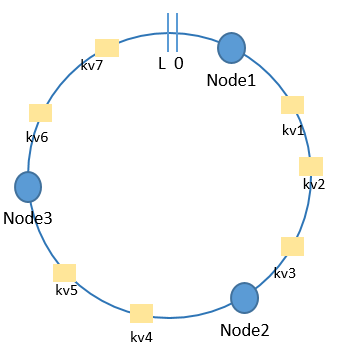
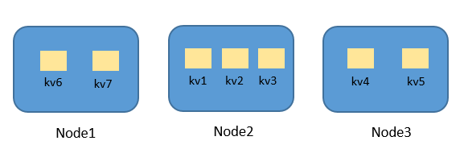
采用这种一致性哈希能够很好的解决只用取模哈希在添加节点和删除节点需要做的大量数据迁移。比如删除Node2节点，只需要将（kv1, kv2, kv2）数据迁移到Node3，在（kv2，kv3）间添加一个节点，只需要将（kv1，kv2）迁移到新的节点。通过分析一致性哈希能够最小化迁移的数据量。
但是单纯的一致性哈希不能解决数据分布不均匀的情况，如删除Node2节点之后Node3节点存储的数据量远远大于Node1。所以为了解决数据分布不均的情况需要引入虚拟节点的概念。
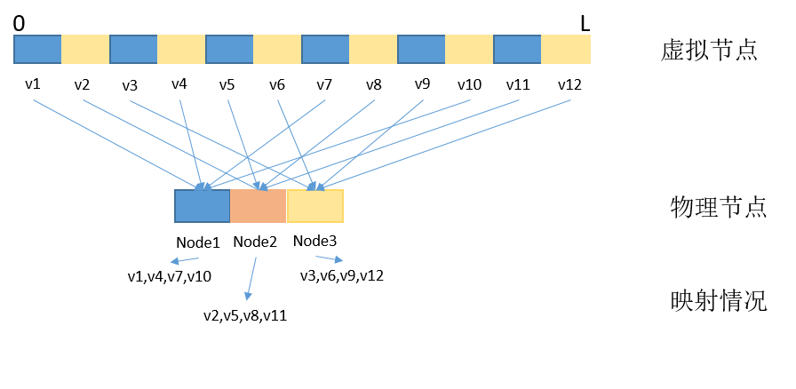
如图2-2 所示，通过引入虚拟节点（虚拟节点远远多于物理节点）将哈希值得范围进行更细粒度的划分，然后通过映射将虚拟节点和物理节点联系起来。现在考虑删除Node2节点，则可以将（v2, v5, v8, v11）虚拟节点按照（v2，v8）迁移到Node1，（v5，v11）迁移到Node3。考虑增加Node4节点，则可以将（v4, v8, v12）迁移到Node4节点，而Node1，Node2，Node3先分别为（v1，v7，v10），（v2，v5，v11），（v3，v6，v9）。由上分析可知道通过增加虚拟节点能够使得数据的分布尽量更加均匀。
range 分区
range分区是将关键值划分成不同的区间片段，同一个区间的数据会被指定到同一个物理节点上，但是一个节点可能存储多个区间。这种方式跟一致性hash有点像，但区别在于区间的位置是可以动态变化的。
当删除一个节点时，只需要将其存储的分区按照一定规则均分给其他节点，元数据服务器同时保存相应的信息。当增加一个节点时，之前的节点也可以按照一定的规则分裂出一些区间数据，给增加的节点。
采用range分区还有一个好处是，当一个分区保存过多的数据或者被密集访问时可以动态的分裂成多个分区，同时迁移一些到其他节点。从而达到负载均衡。
分区决策
直接取模的哈希或者一致性哈希（不带虚拟节点）虽然实现简单，但是由于不能保证负载均衡或者可扩展性差等缺点，所以这两种方式不会用于工程实践中。
一致性哈希（带虚拟节点）中元数据服务器需要保存虚拟节点和物理节点的映射规则，在节点增删的过程中都能较好的保持数据动态均衡。
range 分区则需要在元数据服务器中保存更多的分区数据，而且这些数据修改频率比一致性哈希（带虚拟节点）高的多。但是相对的能够更好的实现数据动态迁移和负载均衡。
元数据管理
一致性哈希和range分区都需要维护一些元数据信息，如节点的状态和数据与物理节点的映射关系等等元数据信息。元数据信息对外界访问数据至关重要，在访问数据之前先需要访问相关的元数据信息，获取数据所在的位置。所以元数据信息一般会单独存储并且对于提供服务，这样的服务节点称为元数据服务器。元数据服务器会频繁的接受到不同客户的的数据访问需求，所以在设计元数据服务器时，要充分考虑系统的可用性和性能，不然元数据服务器会成为整个系统的瓶颈。
对于实现高可用性和高性能的一个方面是多副本存储，这个将在下一个小节介绍。多副本存储主要是要保证副本之间的数据一致性。另一个提供元数据服务器的性能和降低元数据服务器的负载是在客户端上保存元数据信息的副本，但这就需要一个机制来保证元数据缓存的一致性。
通过Lease 机制[11]来保证客户端缓存的一致性。 客户端在请求元数据时，除了得到该缓存外还会得到一个Lease表示的租约。这个Lease的含义是：服务器保证元数据在这段Lease时间内不会被修改。因此客户端在这个Lease租期内，访问元数据就不需要经过元数据服务器了，直接访问缓存就行了，当租期过期之后，客户端可以重新申请新的租期。当一个客户端想要修改一个元数据信息时，修改会先被缓存在客户端上同时向元数据服务器发送请求，元数据服务器收到这个请求之后，判断已颁布的Lease是否全部过期，如果是然后执行这个修改请求，否则阻塞这个请求直到Lease全部过期。同时更新其他客户端上的元数据信息和Lease（获取新的任期）。如果没有元数据被修改，则服务器只更新客户端上的Lease即可。在Lease机制的实现中重点要考虑租期的有限期多长比较合适，如果太短则客户端需要频繁向服务器重新请求元数据信息，如果太长而修改请求将会被长时间阻塞导致系统性能下降。
数据复制集（replication）
在分布式系统中，但随着节点规模的增加，系统不可避免的会发生一些故障比如：节点的掉电，网络故障，主机crash，磁盘损坏等等故障，而都可能导致部分节点不可用。而分布式系统本身的设计理念就是为了加强系统的可用性，为了解决单个节点故障导致的系统问题的是将数据冗余存储，及当一个节点不可用时能够使用其他节点代替这个节点的功能。数据冗余存储增强了系统的可用性，但是也引入了一个新的问题，及如何保证数据复制集中的数据的一致性。下面两个小节详细描述这个问题。
主从复制
在系统中选取一个节点作为Primary节点，复制集的更新操作都通过Primary节点控制。将更新操作以log或者消息通信的方式发送给其他从节点。从而保持数据的一致性。
而主节点同步数据到从节点的方式有三种：同步复制，异步复制，半同步复制。
- 同步复制是指客户端的修改请求主节点只有等到所有的从节点都更新完成才向客户端返回成功。同步复制能够很好的保证数据一致性，但是客户端的修改请求响应延迟比较大。同时当一个节点出现异常时，更新无法完成，可用性比较差。请求响应过程如下图所示。
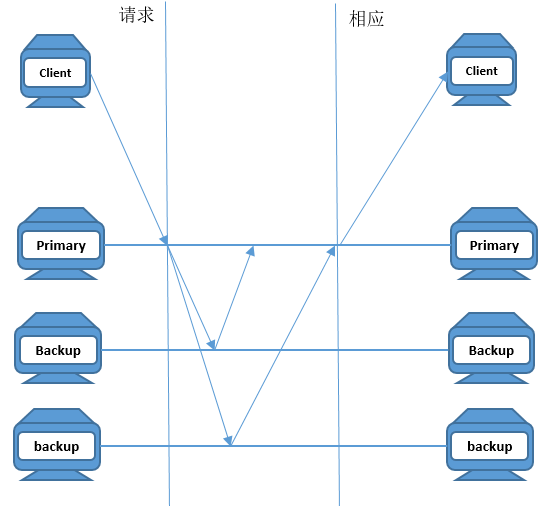 - 异步复制是主节点在执行完客户端的更新之后直接成功给客户端，自己在异步更新从节点的数据。异步模式下客户端操作的响应时间比较短，但是存在对数据的风险，如果在更新从节点数据之前主节点crash掉，那么这次的更新数据将会丢失。 异步模式如下图所示。
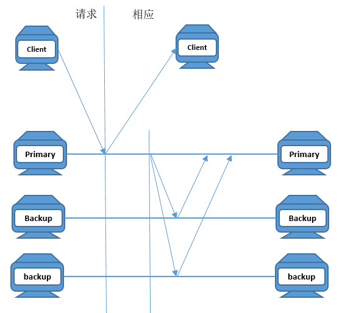 - 半同步复制结合了同步复制和异步复制的优点，主节点至少等待一个从节点得到数据之后才向客户端返回成功，之后在异步更新其他节点。能够在很好的保证响应时间的同时较好的保证数据一致性。如下图所示。
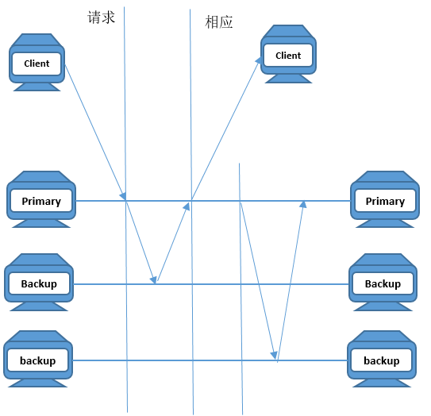
主从复制的模式都比较简单，不能很好的处理节点发生故障时如何保证各个节点数据的一致性。其中的主节点也扮演着关键角色，如果主节点crash 掉，对系统的可用性和一致性将产生很大的影响。这就需要一个更好的一致性算法。下面将介绍这个一致性算法。
Raft 一致性算法
Raft是一个分区容忍的一致性算法，其中分区容忍不区分网络故障或者节点故障所导致的节点分区。Raft是多数者决策的一致性算法，只要正常工作的节点数大于N/2 + 1(N 为总节点数目)，Raft算法就能够保证数据的一致性。为了能更有效的产生决策一般节点数目为奇数个。Raft和 Paxos[12]具有相同的功能和性能，但是它的在设计初衷就是为了加强可理解性，通过采用强的领导人原则和一些其他约束使得代码的正确性跟容易证明并且实现也更加简单，所以Raft 更适合在工程中解决多副本一致性的问题。
假设服务器存储一个包含一系列指令的日志，这些指令系列按照顺序执行，如果状态机的初始状态是一样的，那么执行相同的指令序列之后到达的状态也是一致的。所以保证系统的的一致性主要是保证不同节点中的日志的一致性， Raft一致性算法就是保证不同的服务器副本中所存储的指令序列日志是一致的，从而保证服务器到达相同的状态。
（1） raft 基础
通常是5个或者3个服务器节点组成一个Raft集群，因为只有系统中过半节点有效，系统就能够正常运行，所以系统容忍2个或者1个节点crash。而Raft集群中服务器节点被分为：Leader， Candidate，Follower三个状态。服务器节点的状态转变如图2-5所示：
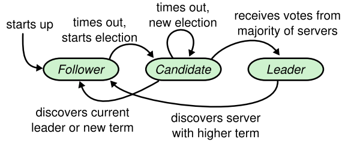
Leader节点会定期向Follower节点发送心跳包维持自己的领导，当Follower 超时没有收到Leader的心跳包时会转变成Candidate，同时增加任期编号向其他节点发起请求投票（RequestVote）RPC，如果获得多数者投票则转变成Leader。Candidate 和Leader发现有比自己更高的任期的节点时都会转变成服务者。
为了保证日志的有序性Raft 引入任期（term）的概念，Raft将时间分割为一个个任期片段如图2-6 所示。当Follower 变成Candidate并发起投票是都会递增自己当前的任期，以区别之前Leader的任期。而Candidate和Leader也通过任期号，判断自己是否过期，如果过期那么它会立即变为Follower。如果节点收到过期的任期号请求会拒绝这个请求。
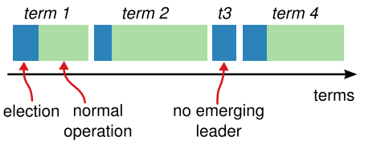
（2） Raft 模块
Raft 为了增强可理解性，降低算法的复杂度。Raft 将算法分解成三个模块：Leader 选举，日志复制，状态机安全性。
- Leader选举：发生在系统启动阶段，或者Follower超时没有接受到Leader的心跳消息。Leader 选举采用多数者策略，及获得集群节点多数人选票的Candidate成为Leader。因为集群节点在一个任期内只能投给一个Candidate从而保证在一个任期内最多只会产生一个Leader。Leader选举可能会出现平分选票的情况，这样就不能产生一个Leader。Raft通过给每个节点随机设置一个超时时间，这样获得相同选票的节点会在不同的时间内重新发起选票，这样就能够较好的避免之前平分选票的情况。
- 日志复制：是Leader将自己的指令序列日志同步到其他节点，其中日志除了包含指令索引外还会包含指令任期。Raft算法为了简化复杂性，约束Leader只能附加日志，及Leader不能删除和覆盖自己日志，只能添加日志。并且强制同步Follower相同索引位置上的日志。通过选举安全特性（一个任期最多有一个Leader）和Leader只附加原则，能够达到如果两个日志在相同索引位置上的任期号相同，则这两个日志在这个索引位置前全部相同。这个原则称为日志匹配原则。
- 状态机安全性：上面两个机制并不能确保每个服务器节点的日志一致性，例如，当一个Follower不可用时，Leader提交了一些条目。而这时候Leader不可用，这个Follower恢复后被选为Leader。则这个Follower会覆盖之前Leader提交了的日志，从而产生日志的不一致性。Raft通过增加选举限制解决这个问题，及Follower不投票给日志序列比自己老的Candidate。这样之前不可用的Follower就不会被选为Leader。同时为了避免Leader不可用时发生的不一致性，Leader不通过计算之前日志的个数提前提交日志。通过上面两个约束就能达到状态机的安全性。
Raft 算法通过划分模块，简化问题。是当前最易于理解的一致性算法，其正确性也能够很好的检验。成为工程实现一致性算法的主流，etcd，tidb等等项目都采用Raft实现数据分布式多副本存储的一致性。
事务原子性保证
事务的原子性是指在分布式事务的数据访问涉及到的所有节点上执行的操作要么全部Commit 或者全部Abort ，不允许局部失败的情况。在分布式系统中数据会被分区和冗余的存储在不同节点中，事务为了提高性能可能会并发的处理多个数据，而这些数据在不同的节点上。为了保证事务的原子性，系统需要协调所有参与事务的节点。
需要原子性提交协议，保证即使发生节点故障或者网络故障，事务参与的节点也能做出一致的决定，及事务的原子性。原子性提交协议是一种能够让不同节点的决定满足如下约束的算法：
约束1 所有达成决定的进程达成的都是相同决定
约束2 进程一旦达成决定，就不能再改变该决定
约束3 只有当所有进程都投Yes的时候，才能达成Commit决定
约束4 如果没有故障并且所有进程投的都是Yes，那么决定最终将会是Commit
约束5 系统发生故障恢复后，经过一段时间的同步，所有进程最终的决定是相同的
根据约束3，如果节点投的是Abort的时候节点能当方面Abort。 但如果提交的是Commit则需要等待协调者的决定，自己本身无法确定协调者的决定，所以称这段等待的时间为不确定区间。
两阶段提交协议（2pc）就是这样的一个原子性提交协议。2pc包含两个对象协调者和参与者。事务的Commit或者Abort都由协调者联系参与者之后决定。2pc包含两个阶段（第一个阶段是准备阶段、第二个阶段是提交阶段）内容如下：
阶段1：准备阶段
1） 协调者向所有参与事务的参与者发送VOTE-REQ消息，询问事务状态。
2） 参与者收到VOTE-REQ消息后，向协调者返回自己当前事务的情况（Yes或者No）。如果参与者投的是No，则参与者提前Abort事务。
阶段2：提交阶段
1） 协调者如果收到的所有来自参与者的投票消息都是Yes，则向参与者发送Commit消息。如果有参与者超时没有回复或者存在No的投票消息，则向参与者发送Abort消息。
2） 每个投Yes的参与者等待协调者的Commit或者Abort消息，并且在收到消息好执行相应的动作。
考虑节点发生故障的情况，如果参与者不在不确定区间中发生故障则可以直接Abort事务，因为协调者在超时没有收到回复时会Abort事务。如果参与者处于不确定区间时发生故障，则不能自己恢复，需要向其他参与者或者协调者询问事务的状态（使用cooperative termination protocol）。如果协调者发生故障，则由系统重新选举一个协调者。如果协调者处于阶段2中的1时发生故障，而有部分节点已经收到Commit消息。由于系统难以获取协调者之前所做的决定，所以需要发送消息前先持久化存储决定，方便节点恢复后查询决定。
2pc在正常情况下需要4n（n是节点数量）消息，协议实现简单，有效。其相关变种成为解决分布式事务一致性的主要方法。
本章小结
本章阐述了分布式系统的关键难点和解决方案。首先介绍了数据分区的方式包括：数据模型，hash分区，range分区，详细分析了选择分区模式的策略和分区产生的元数据管理方式。为了增强系统的可用性，数据会冗余存储，所以介绍了数据冗余存储的同步模型和raft一致性算法。分析完数据，最后研究分布式数据库使用2pc实现事务的原子性。
第三章 TiDB 源码解析
在了解分布式系统设计中的关键技术之后，就能够分析TiDB在设计时对应采取哪些技术，以及采取这些技术的优点。TiDB 在设计系统架构时采取分层的模式，简化一个模块的功能，不同节点直接相互协调，从而加强系统的可用性。本章首先讲解TiDB系统的基础架构，然后分析TiDB的KV存储模型，其次解读TiDB执行SQL语句流程，最后研究TiDB的分布式事务模型。
基础架构
TiDB在设计之初就完全兼容MySQL协议，用户通过MySQL客户端，经过Load Balancer的负载均衡模块之后访问TiDB Server，获得数据库存储服务。TiDB的整体架构如图3-1所示。
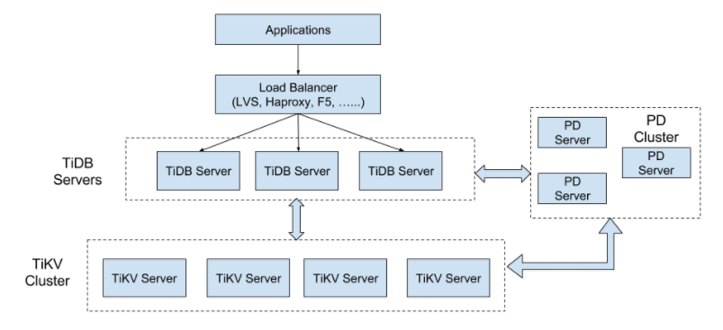
整个TiDB数据库服务分为TiDB，TiKV，PlaceDriver（PD）三个模块。
1） TiDB Server负责和MySQL 客户端交互，解析和执行SQL语句，通过PD获取数据的位置后从TiKV Server中获取数据并返回给客户端。
2） PD 类似元数据服务器，存储TiKV集群元数据信息。同时TiKV集群和PD维持心跳消息，定期向PD反馈自己的状态。PD会根据TiKV集群的状态调度TiKV上存储的数据，从而达到负载均衡和可靠性的特点。
3） TiKV Server负责数据的存储，同是提供分布式提交数据的能力。存储数据是采用Raft算法保证副本的一致性，为了提供数据的并发访问能力对外提供MVCC和快照的功能。同时还支持TiDB将部分查询语句的计算下移的协处理功能。
三个模块完全解耦，模块之间通过gRPC进程通信。使得TiDB在部署上灵活，具有水平弹性扩展的能力。TiDB通过增加TiDB Servers节点数量提供数据库对外的吞吐能力，通过增加TiKV节点提供数据存储能力，而且数据的迁移，一致性的维护完全不需要人为维护。TiDB对外呈现单机MySQL的访问形式，最大程度简化MySQL用户管理集群的复杂度，减轻数据库管理员的工作量。
存储模型
在讲存储模型前先忽略关系型数据库中关系表结构。由第二章的讨论我们知道为了实现数据的可扩展性，数据会采用Key-Value的数据模型。TiKV也采用Key-Value数据模型，底层单机存储引擎采用Facebook的RocksDB，RocksDB采用LSM树存储引擎具有很好的写性能，并且写入数据是排序好的。
采用Key-Value数据模型之后要考虑数据如何划分。TiKV采用Range分区的方式，TiKV将数据划分为一个个Region，每个Region用[StartKey，EndKey）这样的左闭右开区间表示。而区间的元数据通过PD模块管理。数据的划分能够提高系统的可扩展性、性能和可用性等。
分布式系统中为了提高可用性还需要对数据多副本存储，TiKV采用Raft一致性算法保证数据的一致性。TiKV总体存储模型如图3-2所示：
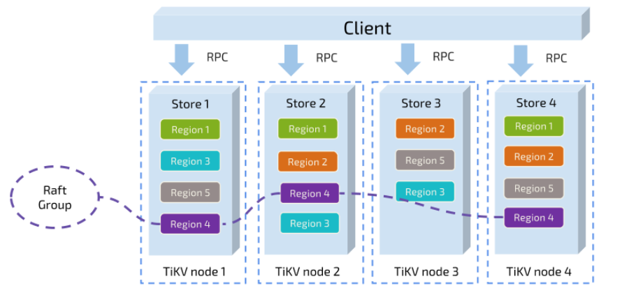
TiDB对外提供的是关系型数据库模型，而TiKV提供的KV存储模型。那么TiDB需要将Table的信息转换成对应的KV值，KV需要存储表中的三个部分数据：表的元信息， 索引数据，表中对应的每一行数据。
TiDB为了构建Key-Value的存储模式，需要给表的每一行，表的索引建立Key的映射关系。TiDB为每个Table分配TableID，为每一个索引分配IndexID，为每一行分配RowID（对于拥有可比较主键的表，采用这个主键值作为RowID）。其中TableID对于Table是唯一的， IndexID对于表的索引是唯一的。TiDB采用 Key = ${tablePrefix}_${rowPrefix}_${tableID}_${rowID} --> Value = [col1, col2, …] 的映射关系表示关系型数据中表的行数据；采用Key = ${tablePrefix}_${idxPrefix}_${tableID}_${indexID}_${indexColumnsValue} --> Value = ${rowID} 表示Unique Index；非Unique Index则将${rowID}也作为Key的后缀，Value为空的表示方法。Value都采用byte数组编码的形式，在TiDB的codec包中实现。
通过上面的映射关系，TiDB将关系型数据的表数据映射成Key-Value存储模式的数据。并且能够高效的支持数据库Insert，Delete，Update，Select等数据库操作。例如：Insert一条数据是，先获取表的Key前缀再加上当前数据的RowID就获得了Key，后面再讲行数据包装成byte数据就可以插入到TiKV存储引擎内了。如果表含有相应的索引需要构建索引的kv对，同时插入到数据库中。
TiDB架构与实现
上面存储模型主要讲解TiDB中数据存储问题，现在深入了解TiDB架构设计。TiDB项目主要是实现MySQL协议层和分布式查询计划的制定等，具体架构如图3-3所示：
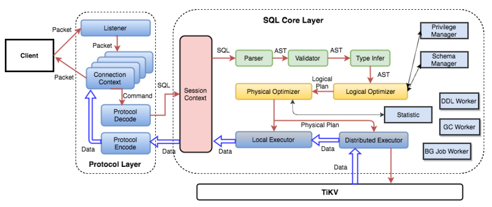
其中Protocol Layer负责与MySQL Client端的交互并且解析MySQL协议，相关代码在tidb/server包中。这一层，通过三次握手与客户端保持连接，同时server.go中Run()方法中启动监听，接受Client端发过了的包，并调用dispatch()函数处理SQL语句。
在SQL Layer中，一个SQL语句经过语法分析，合法性验证，制定查询计划，优化查询计划，生成查询器和执行并返回结果等一系列流程。如果采用分布式存储引擎，经过distsql分析生成对应的分布式执行计划，并调用TiKV相应的接口。下一小节将详细讲解SQL的处理流程。
KV api Layer中，定义了TiDB所对接的存储引擎的接口，最简单的是具有带事务的kv存储引擎。而TiKV还具有分布式计算接口，所以TiDB能够将SQL语句的一些计算下推到TiKV。
SQL执行过程
SQL是一门复杂的，表意的语言，而且TiDB底层是一个分布式Key-Value存储引擎。所以TiDB重写了SQL语句的处理，TiDB处理SQL的具体过程如图3-4所示：
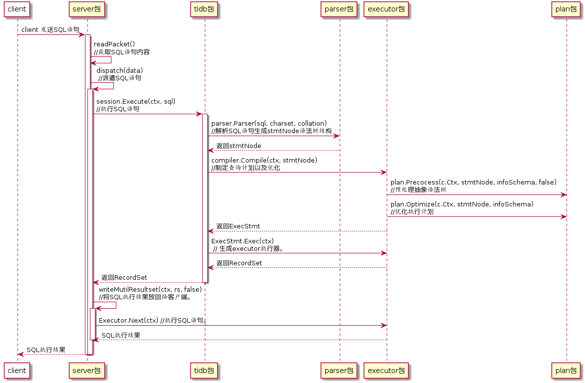
TiDB中的协议层主要在server包中，在启动tidb-server之后，调用server.go中的Run()函数监听客户端发来的消息。Run() 调用readPacket() 获取客户端发来的SQL语句。然后调用dispatch(data)处理客户端请求，dispatch更加请求的不同类型调用不同的处理函数，最终主要通过tidb包session.go中的Execute()处理SQL语句。处理完后返回RecordSet类型的处理结果，在调用writeMutilResultset()函数通过执行Executor.Next()方法将结果一个个返回给客户端。
Session类型的Execute(ctx, sql)通过调用parser.Parser(sql,charset,collation)方法分析SQL语句。Parser()函数通过lexer将SQL文本转换成token，根据yacc语法匹配对应的token并最终生成抽象语法树。为了方便后续对抽象语法树的处理TiDB采用Visitor设计模式遍历所有节点，具体的Visitor模式设计如图3-5所示。
Parser()返回语法树之后，Execute()调用compiler.Compile(ctx, stmtNode)生成查询计划，而Compile()调用plan.Preprocess()进行SQL的一些合法性检查，再调用plan.Optimize()制定查询计划，并优化查询计划。而plan的这两个方法的调用主要是实现对应的Visitor方法，在遍历抽象语法树时采用不同的方法。如图3-5中的Visitor。通过分析可以知道，通过采用Visitor设计模式，降低了SQL分析与处理的耦合度，使得代码可以灵活的扩展。
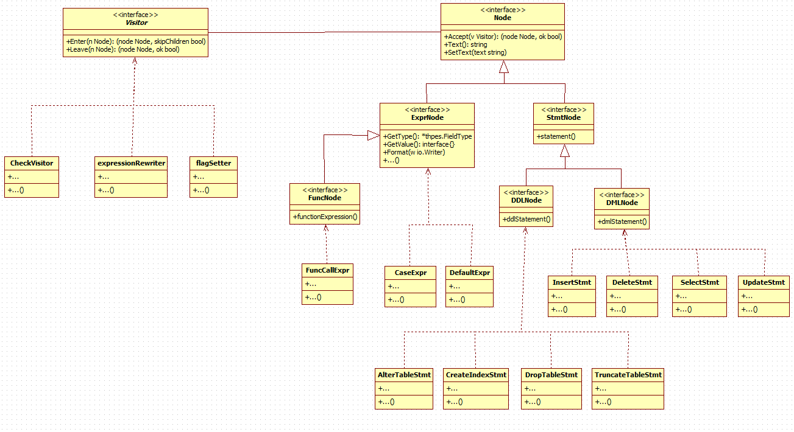
Session生成查询计划之后调用ExecStmt.Exec(ctx)构造查询执行器（Executor），并返回RecordSet数据类型。Exec() 通过调用ExecStmt.buildExecutor(ctx)根据查询计划生成对应查询执行器。返回结果recordSet类型包装了执行器，Executor和RecordSet结构图3-6所示。RecordSet包含Field()返回表中每一列的类型，Next()/NextChunk()获取数据，Close()关闭数据集等接口。其中RecordSet获取数据的关键接口是Next()/NextChunk()函数，在获取数据是通过调用Executor中的Next()/NextChunk()函数。
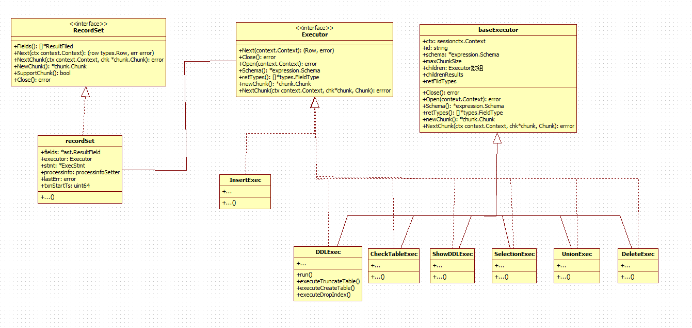
在整个SQL的执行过程中最关键的是执行计划的生成和优化。一般的，数据库查询优化有两个模块分别是逻辑优化和物理优化。逻辑优化是依据代数的等价交换原则生成更优化的执行计划，主要的优化方式有列剪裁，谓词下推，最大最小消除。物理优化主要是基于代价优化，最主要的是优化表的连接顺序。基于代价优化，需要有表的状态作为支撑，根据表中数据的大小，索引情况等等评估不同连接顺序的代价，选出较好的查询方案。TiDB 通过plan包中的logicalOptimize()函数做逻辑优化，通过dagPhysicalOptimize()做逻辑优化。具体实现查看包中对应的代码。
由于TiDB对接的TiKV分布式存储引擎支持分布式计算，所以TiDB 在生成执行计划是可以将查询计划下移到存储引擎，代码实现在distsql包中。一个典型的SQL例子：select sum(count(*)) from t where t.name = “TiDB”
TiDB 将聚合函数sum(count(*))中的count计算下移到TiKV存储引擎，在TiDB server中仅将返回的count值加起来就行了。相比将表的数据返回给TiDB server后再做聚合函数，如图3-7所示。通过计算下移减小了RPC调用和网络传输的数据量，并且更加充分的利用了TiKV服务节点的计算资源，使得系统性能大大提高。
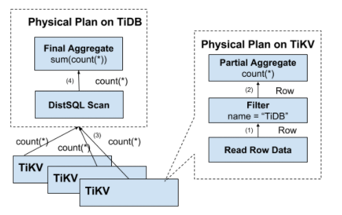
分布式事务模型
TiDB中的分布式事务模型参考google的Percolator[13]系统的事务模型。主要通过增加Column Families列来保证跨行事务的提交和mvcc的功能，主要是Default，Write和Lock，详情如表3-1所示。同时TiDB为一个事务涉及的所有Key选取一个Key作为primary key，这个primary key在事务的提交过程中相当于2pc中的协调者，通过primary key的状态判断事务是否提交成功或者回滚。
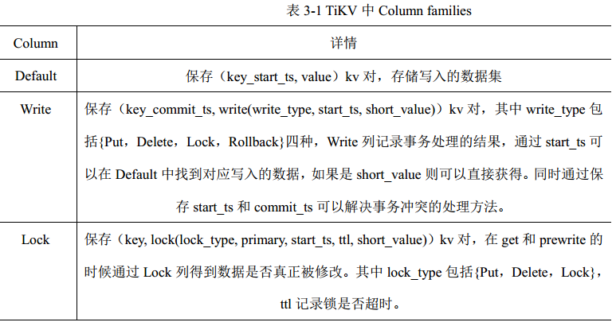
TiDB事务处理主流程
了解了TiDB中的数据结构之后，分析TiDB数据处理的主要流程。客户端模式是自动提交模式，及默认客户端的每一条SQL命令是独立的一个事务。客户端通过输入begin启动一个输入，并通过pd模块获取一个全局递增的时间戳记为start_ts。在输入commit或rollback前的SQL语句的操作结果先保存在客户端的内存中，通过get(key,ts)方法从TiKV中获取数据。提交事务时，TiDB分为两阶段处理，第一阶段：prewrite，第二阶段：commit。TiDB先将这次事务操作的数据分区，对所有的分区数据调用prewrite()。如果所有的数据都正确写入到Lock和Default列，则进入下一个commit阶段。TiDB先通过pd获取commit_ts时间戳，后先提交primary key。如果提交primary key失败则重启2pc任务。如果提交primary key成功，则可以异步提交其他key数据。具体的事务处理流程如图3-8所示。
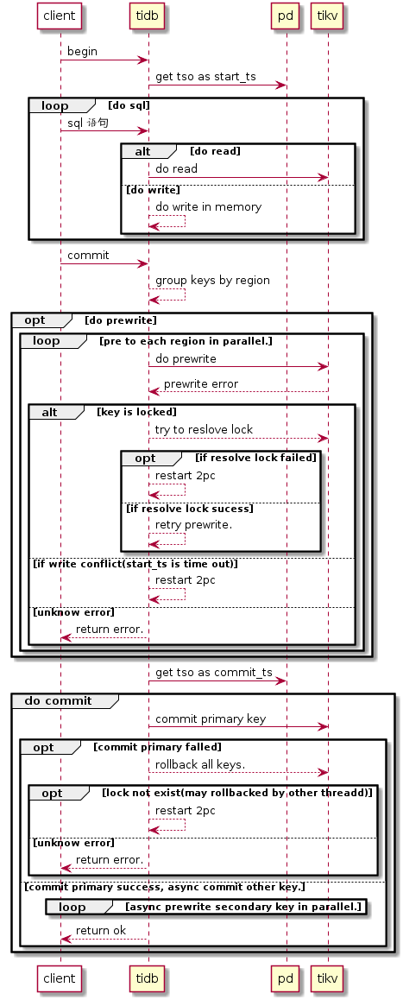
TiKV中get流程
TiDB读取数据远程时，调用TiKV的get(key, ts)。TiKV实现了MVCC，能够通过ts获取特定的版本的数据。get方法首先检验Lock列中当前key的锁状态，如果锁的时间戳小于get的时间戳，则说明当前访问不合理，可能是有另外一个事务正在写这个数据，或者之前的提交的事务没有成功清理锁（调用resolve_lock清理遗留的锁之后可以访问），故返回KeyisLocked的错误类型，交给TiDB判断下一步要执行的函数。然后如果不存在锁或者get的时间戳小于lock.ts的时间戳则根据时间戳在Write列找到对应时间戳前最近写入的数据。最后根据write_type类型返回对应的数据，具体的处理流程如图3-9所示。
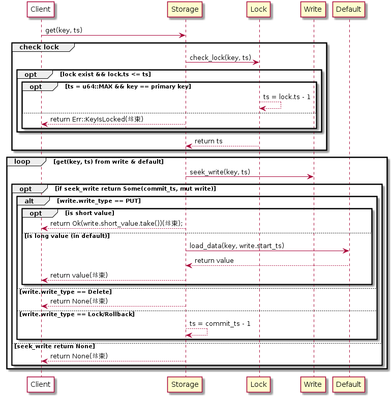
TiKV中prewrite和commit流程
TiDB在提交事务为了分布式事务的一致性提交，需要先提前写入数据。调用TiKV中的prewrite函数，首先在写入数据之前需要先在Write列中获取最新的commit_ts时间戳，如果commit_ts大于当前事务的start_ts，则说明当前事务开始后有其他事务已经提交了该数据，故返回WriteConflict错误类型。然后获取Lock列的start_ts，如果和当前事务的start_ts不相等则说明有其他事务在修改该数据，故返回KeyIsLocked错误类型。最后如果都没有问题，则可以在Lock列和Default列写入数据。具体prewrite如图3-10所示。
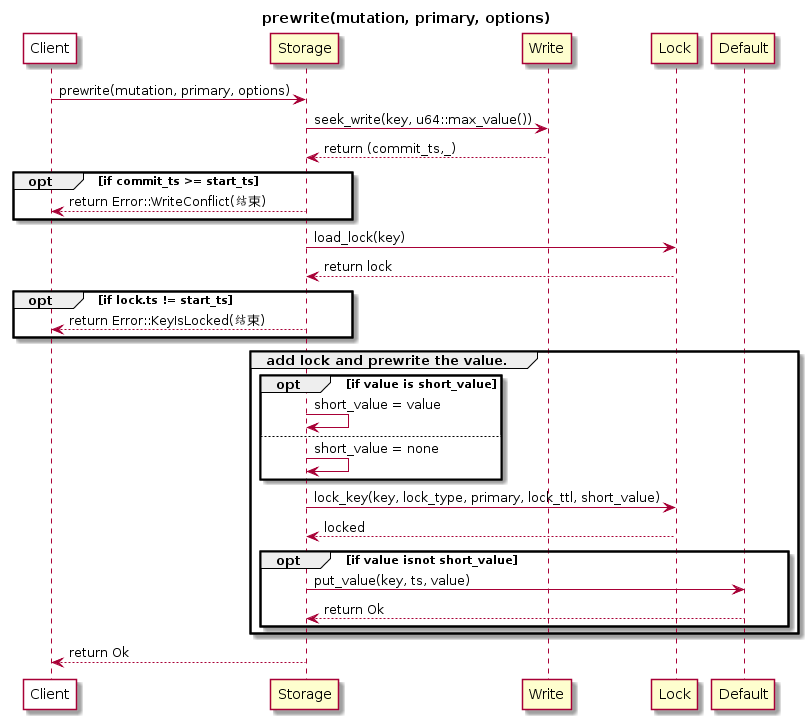
当事务涉及的所有数据都成功prewrite之后进入下一个commit阶段，如图3-11所示。首先在commit数据之前也是先判断Lock列中的锁的时间戳与当前事务的开始时间戳是否相等，如果相等则在Write列中写入相应的数据，同时释放Lock列中的锁数据。如果不相等则调用get_txn_commit_info函数获取事务的提交状态，如果write_type是Put，Delete或者Lock则说明给数据已经被其他进程提交故返回Ok即可，否则返回TxnLockNotFound错误。
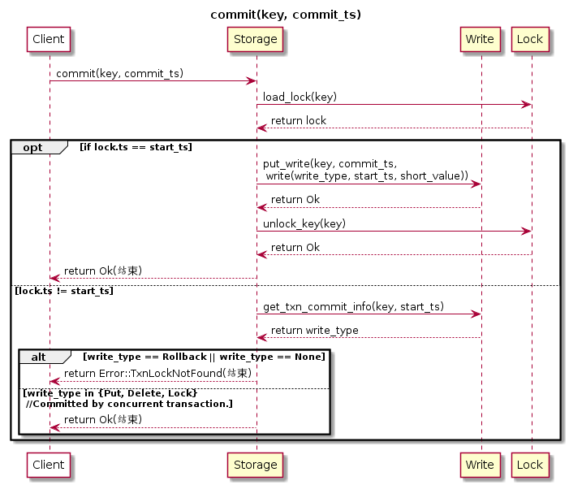
TiDB 使用这种分布式两阶段提交模型，保证系统即使出现节点故障，网络故障等异常情况也能实现事务的原子性提交。故障恢复之后，如果事务的primary key的锁没有被释放，则说明事务还没有被提交，所以在Lock中的数据可以直接被清除，则数据都回到事务提交前的状态。如果primary key的锁不存在了，则说明已经完成了prewrite阶段，所以数据已经写入到节点中的Lock和Default列中，只要将Lock中写入的数据Write列就能达到数据都恢复到事务提交后的状态。start_ts和commit_ts用于判断事务冲突和多版本读写。
本章小结
本章详细讲解了TiDB系统的设计要点，首先分析TiDB的整体架构（TiDB项目，TiKV项目，PD项目）分析它们之间的相互关系。然后根据思考分布式系统设计的原则，分析TiKV中存储引擎的设计方案，如如何分区和一致性如何保证等等。其次再分析TiDB 的架构、SQL语句的处理过程和主要的数据结构的设计方案。最后研究TiDB的分布式事务模型，事务模型是根据2pc的设计思想设计的，它通过primary key充当协调者，在提交是分为prewrite和commit两个阶段，到达事务的原子性。
第四章 TiDB部署与应用
清楚了TiDB的实现方式之后，通过部署TiDB和应用TiDB，能够加深我们对系统的理解，也能学到运维方面的知识。本章首先讲解TiDB的单机部署策略，然后使用Ansible实现集群部署，最后讲解TiDB的一个简单应用（其实也不算什么应用）。
TiDB单机快速部署
TiDB包含TiDB Server，TiKV，PD三个主要模块和其他的一些监控模块，在部署上有一定复杂性。为了先熟悉TiDB的各项功能，首先在单机上部署和熟悉使用。应用容器化已经是云计算的主流，容器能够很好的提供虚拟化的运行环境，简化应用的部署，迁移，监控等等操作。为了方便多个容器的管理使用docker-compose进行容器集群的编排。
下载tidb-docker-compose项目之后，进入项目执行docker-compose up -d创建并启动集群。docker-compose 执行之后会默认启动3个TiKV，1个TiDB，3个PlaceDriver。同时会启动Prometheus容器（用于日志的统计，查询，存储等等功能），Pushgateway容器（Prometheus系统的一个模块，用于接受TiDB推送过来的各个操作信息日志）和Grafana容器（用于图形化，形象的显示Prometheus中统计的数据）。具体启动的容器如图4-1所示。
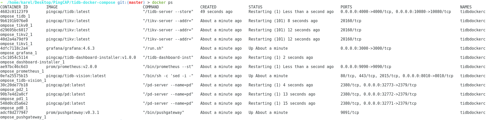
创建和启动集群之后，能够通过mysql –h 127.0.0.1 –P 4000 –u root访问本机上的数据库服务。访问 http://localhost:3000 访问grafana监控服务，默认用户名和密码都是admin。如图4-2所示。
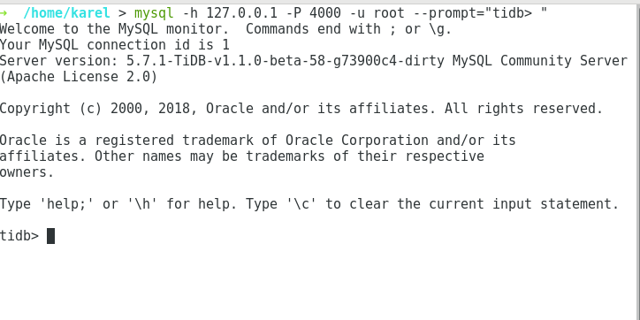
TiDB 集群部署
TiDB项目组件多，而且之间的关系较为复杂。如果直接使用二进制部署具有一定的难度也不利于维护，所以采用Ansible工具进行集群部署。Ansible是一个集群部署工具，通过ssh协议实现管理节点与远程节点的通讯。Ansible通过Ad-Hoc和playbooks实现对远程节点的批量处理，能够灵活的实现节点之间的文件传输，安装部署软件，启动服务等功能。通过编写playbooks脚本，能够自动系统的部署，滚动升级，监控等等高级功能，最小化运维成本。
通过下载TiDB-Ansible项目，修改其中的invertory.ini文件配置各个节点的状态，然后执行Ansible命令，部署和监控TiDB项目。具体操作查看官网文档。
TiDB应用
为了熟悉TiDB的应用，简单的设计了学校信息数据库的系统，数据库ER图如图4-3所示。信息系统中主要包含：department, speciality, student, course, student_course, teacher, teacher_course, class等数据库表。其中根据数据库范式分解，分离出student_course, teacher_course等联系集，减少数据库的冗余数据，在处理事务和保证表的某些约束时能够更加高效，同时也减少NULL值数据增加数据的安全。因为TiDB完全兼容MySQL协议，所以我们能够使用如表4-1所示编辑数据库表，同时TiDB还有一个特有的EXPLAIN语法。
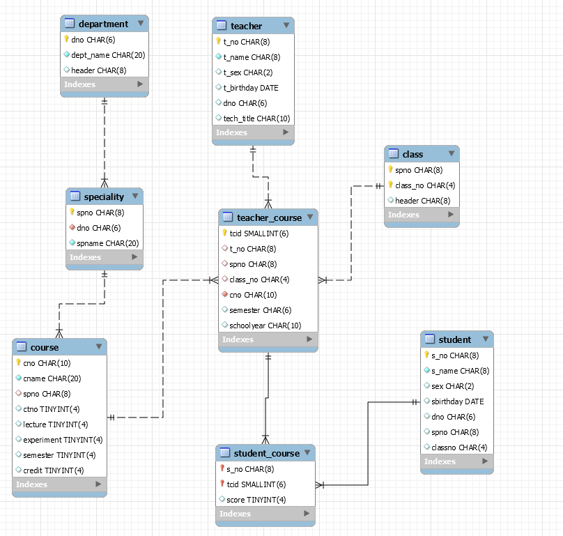
了解了TiDB中数据库操作的主要语法，创建如图4-3的学校信息系统的数据表，并为表插入一定量的数据。查看TiKV存储引擎的存储状态和grafana监控系统中各项数据，熟悉TiDB系统。同时执行一些Select语句的测试用例，查看执行结果。
测试用例：
为了加深对查询计划的理解使用EXPLAIN语句查看select语句执行过程：1
2
3
4EXPLAIN select s_name, sex, sbirthday from student join teacher_course
on student.spno=teacher_course.spno
join teacher on teacher.t_no=teacher_course.t_no
where teacher.t_name="Tang";
EXPLAIN输出结果中id列表示具体的操作名称，parents和children列分别是当前id的父操作和子操作。Task列中root表示在TiDB中执行该操作，cop表示下发到TiKV中进行操作。Operator info包含操作的详细信息，count表示当前操作预计扫描多少数据，用于执行计划是的优化。
根据结果有如图4-5所示的执行过程。TiDB将Select语句中where中的条件下发到TiKV中提前进行处理，从而减少TiDB与TiKV中的通讯数量。同时Join语句会采用hashjoin的方法，即为小表在内存中建立hash索引，这样直接扫描大表时，能够根据join的条件直接判断小表中是否有对应改行的数据，而不需要为每一条数据遍历一次小表，通过这个处理方法能够大大的提高join的效率。同时select语句还根据表中行的数量等等数据优化表的连接顺序。
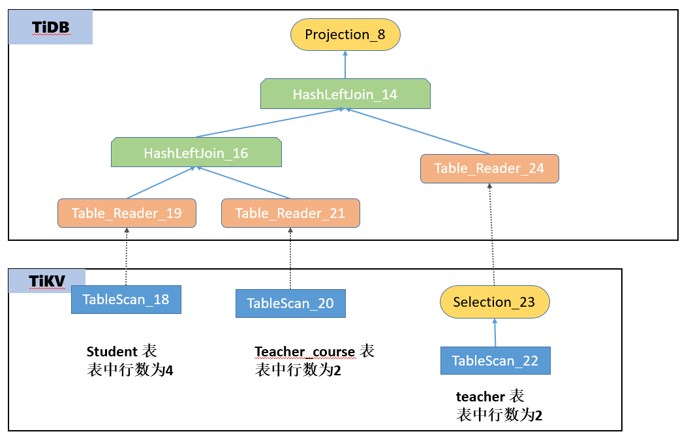
本章小结
本章首先介绍TiDB的单机部署和集群部署的方案，也可以看到可以通过使用现有的工具能够极大的简化部署的复杂性。从而提高开发效率和简化运维难度。最后将TiDB应用在学校信息管理系统上，并分析其查询计划。
参考文献
[1] Ghemawat S, Gobioff H, Leung S T. The Google file system[M]. ACM, 2003.
[2] Chang F, Dean J, Ghemawat S, et al. Bigtable: A distributed storage system for structured data[J]. ACM Transactions on Computer Systems (TOCS), 2008, 26(2): 4.
[3] Dean J, Ghemawat S. MapReduce: simplified data processing on large clusters[J]. Communications of the ACM, 2008, 51(1): 107-113.
[4] 沈姝. No SQL 数据库技术及其应用研究[D]. 南京信息工程大学, 2012.
[5] Chodorow K. MongoDB: The Definitive Guide: Powerful and Scalable Data Storage[M]. “ O’Reilly Media, Inc.”, 2013.
[6] George L. HBase: the definitive guide: random access to your planet-size data[M]. “ O’Reilly Media, Inc.”, 2011.
[7] 刘晓光. 基于 MySQL 的分布式 SQL 数据库的设计与实现[D]. 中国科学院大学 (工程管理与信息技术学院), 2016.
[8] Shute J, Vingralek R, Samwel B, et al. F1: A distributed SQL database that scales[J]. Proceedings of the VLDB Endowment, 2013, 6(11): 1068-1079.
[9] Ongaro D, Ousterhout J K. In search of an understandable consensus algorithm[C]//USENIX Annual Technical Conference. 2014: 305-319.
[10] Singh M, Garg D. Choosing best hashing strategies and hash functions[C]//Advance Computing Conference, 2009. IACC 2009. IEEE International. IEEE, 2009: 50-55.
[11] Gray C, Cheriton D. Leases: An efficient fault-tolerant mechanism for distributed file cache consistency[M]. ACM, 1989.
[12] Chandra T D, Griesemer R, Redstone J. Paxos made live: an engineering perspective[C]//Proceedings of the twenty-sixth annual ACM symposium on Principles of distributed computing. ACM, 2007: 398-407.
[13] Peng D, Dabek F. Large-scale Incremental Processing Using Distributed Transactions and Notifications[C]//OSDI. 2010, 10: 1-15.
[14] Bernstein P A, Hadzilacos V, Goodman N. Concurrency control and recovery in database systems[J]. 1987.